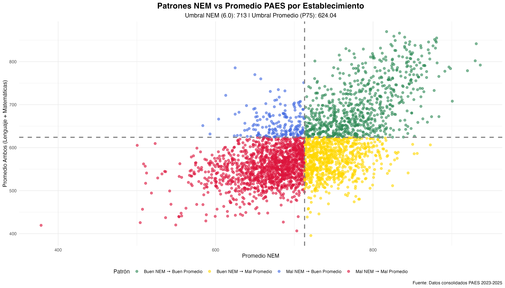
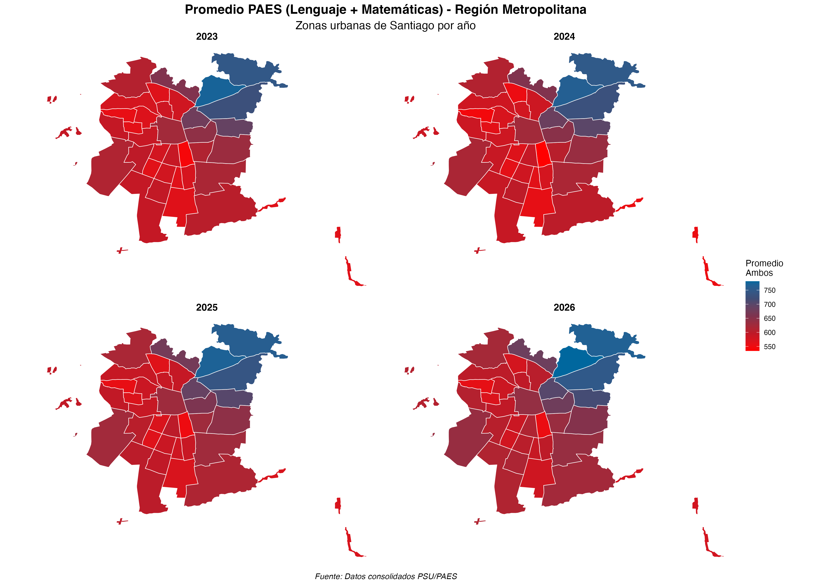
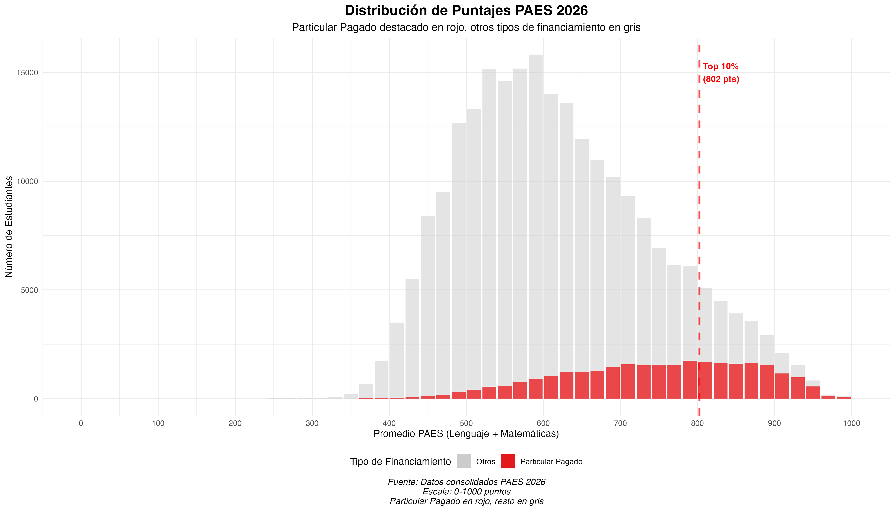

La selección universitaria en Chile: tres problemas y una buena noticia Difusión

La Prueba de Acceso a la Educación Superior (PAES) vuelve a confirmar una tendencia de largo plazo: el establecimiento educacional del que egresas sigue siendo un determinante central del rendimiento en las pruebas de selección. Esto no es nuevo en la literatura, pero vale la pena insistir —con más precisión— porque detrás del "lugar común" se esconden al menos tres problemas y una buena noticia.
1) Segregación espacial
La desigualdad territorial sigue operando como un filtro silencioso. El ejemplo clásico es Santiago: de manera sistemática, las comunas del sector nororiente exhiben resultados muy superiores al resto de la capital. En algunas comparaciones, la brecha puede rondar los 120 puntos, una distancia que no se explica solo por "esfuerzo individual", sino por un ecosistema completo de oportunidades desiguales (oferta escolar, expectativas, redes, capital cultural, acceso a apoyos externos, etc.).

2) El NEM pierde poder predictivo
Un segundo problema es la tensión entre trayectoria escolar y estandarización. En la práctica, el NEM parece haber debilitado su capacidad de predecir desempeño en la PAES: solo una parte de quienes tienen promedios altos logra puntajes altos, mientras que para un grupo relevante el NEM no anticipa el rendimiento en la prueba. Esto sugiere, al menos, dos hipótesis plausibles: inflación de notas y/o desalineación entre lo que se evalúa en la escuela y lo que exige la prueba.
Esto es particularmente importante porque muchas universidades han reforzado el peso de la trayectoria (NEM y ranking) frente a la prueba, buscando corregir sesgos. Sin embargo, esa corrección puede abrir otra desigualdad: la distinta "severidad" o exigencia del establecimiento de origen, que hace que un mismo promedio no signifique lo mismo en distintos contextos escolares.

3) Dependencia: concentración de altos puntajes
El tercer problema es estructural: la distribución de buenos puntajes está fuertemente concentrada por tipo de establecimiento. Aunque los colegios particulares pagados representan una fracción pequeña del estudiantado, concentran una proporción muy alta de los puntajes sobresalientes, mientras que el resto se reparte entre municipal y particular subvencionado. Esto obliga a volver a lo básico: describir bien el patrón y, sobre todo, explicarlo con datos.
La pregunta no es si "son más inteligentes" (una salida fácil y mala), sino qué mecanismos acumulativos están operando: nivel educacional de los padres, ingresos, tiempo disponible, acceso a preuniversitario, composición escolar, estabilidad docente, condiciones materiales del barrio, e incluso factores menos visibles como expectativas institucionales y capital informacional sobre el sistema.

La buena noticia: se mantiene una mirada crítica
La buena noticia es política y cultural: pese a ciclos de reformas, cansancio y promesas, la discusión pública no se volvió autocomplaciente. Desde las protestas estudiantiles de hace más de una década, se instaló una sensibilidad crítica que —con matices— se mantiene. No hemos caído del todo en el eslogan simplista del "fin de la selección", pero tampoco normalizamos que la universidad que te acoge siga estando tan fuertemente asociada a tu origen social.
Tres problemas, una buena noticia. Y un desafío persistente: que los datos no solo confirmen lo obvio, sino que permitan identificar con claridad dónde están los mecanismos que reproducen la desigualdad —y cuáles son, de verdad, los puntos de intervención.